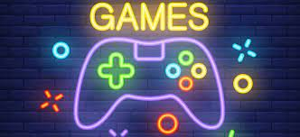

¿Que son los video juegos?
Un videojuego es una aplicación interactiva orientada al entretenimiento que, a través de ciertos mandos
o controles, permite simular experiencias en la pantalla de un televisor, una computadora u otro
dispositivo electrónico. Los videojuegos se diferencian de otras formas de entretenimiento, en que deben
ser interactivos; es decir, los usuarios deben involucrarse activamente con el contenido. El concepto de
videojuego se utiliza para referirse a cualquier juego digital interactivo, independientemente de su
soporte físico.Pueden ser muy distintos entre sí, tanto en complejidad como en calidad gráfica y en
temática.


Definicion
Un videojuego, juego de video o juego de vídeo es un juego electrónico en el que una o más personas
interactúan por medio de un controlador, con un dispositivo que muestra imágenes de vídeo1. Este
dispositivo electrónico, conocido genéricamente como «plataforma», puede ser una computadora, una
máquina de arcade, una videoconsola o un dispositivo portátil, como por ejemplo un teléfono móvil,
teléfono inteligente o tableta. La industria de los videojuegos es una de las principales en el mundo
del arte y del entretenimiento.
Al dispositivo de entrada, usado para manipular un videojuego se le conoce como controlador
o mando, y varía dependiendo de la plataforma. Por ejemplo, un controlador podría únicamente consistir
de un botón y una palanca de mando o joystick, mientras otro podría presentar una docena de botones y
una o más palancas, lo que llamamos mando. Los primeros juegos informáticos solían hacer uso de un
teclado para llevar a cabo la interacción, o bien requerían que el usuario adquiriera un mando con un
botón como mínimo. Muchos juegos de computadora modernos permiten o exigen que el usuario utilice un
teclado y un ratón de forma simultánea.
Generalmente los videojuegos hacen uso de otras maneras, aparte de la imagen, de proveer la
interactividad e información al jugador. El audio es casi universal, usándose dispositivos de
reproducción de sonido, tales como altavoces y auriculares. Otro tipo de realimentación se hace a través
de periféricos hápticos que producen vibración o retroalimentación de fuerza.